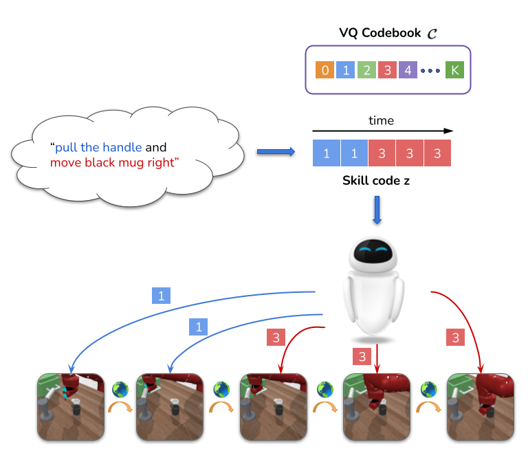

LISA: Learning Interpretable Skill Abstractions from Language

|
|
Learned Interpretable Skill Abstractions from Language
We show the corresponding word frequencies for each learned skill code from 0-99 on BabyAI BossLevel task.
|
Abstract
Learning policies that effectively utilize language instructions in complex, multitask environments is an important problem in sequential decision-making. While it is
possible to condition on the entire language instruction directly, such an approach
could suffer from generalization issues. To encode complex instructions into skills
that can generalize to unseen instructions, we propose Learning Interpretable Skill
Abstractions (LISA), a hierarchical imitation learning framework that can learn
diverse, interpretable primitive behaviors or skills from language-conditioned demonstrations. LISA uses
vector quantization to learn discrete skill codes that are highly correlated with
language instructions and the behavior of the learned policy. In navigation and
robotic manipulation environments, LISA outperforms a strong non-hierarchical
Decision Transformer baseline in the low data regime and is able to compose learned skills to solve
tasks containing unseen long-range instructions. Our method demonstrates a more
natural way to condition on language in sequential decision-making problems and
achieve interpretable and controllable behavior with the learned skills.
Behavior on unseen composition instructions

Language Instruction: "go to a purple ball, then go the green ball and put the box on your left next to the green key and put the yellow ball next to a purple ball"
|

Language Instruction: "open the drawer and move the black mug right"
|
Approach

Given a language instruction, LISA learns discrete skill abstractions, picked from a learned codebook. The policy conditioned on the skill code learns to execute distinct behaviors and solve different sub-goals.
|
Learned Skills
We show the most correlated words for 4 different learnt skill codes on LORL. We can see that the codes represent interpretable and distinguishable skills. For e.g, the code on the top left corresponds to closing the drawer.
Paper
Poster
Citation
@inproceedings{
lisa2022,
title={{LISA}: Learning Interpretable Skill Abstractions from Language},
author={Divyansh Garg and Skanda Vaidyanath and Kuno Kim and Jiaming Song and Stefano Ermon},
booktitle={Advances in Neural Information Processing Systems},
editor={Alice H. Oh and Alekh Agarwal and Danielle Belgrave and Kyunghyun Cho},
year={2022},
url={https://openreview.net/forum?id=XZhipvOUBB}
}